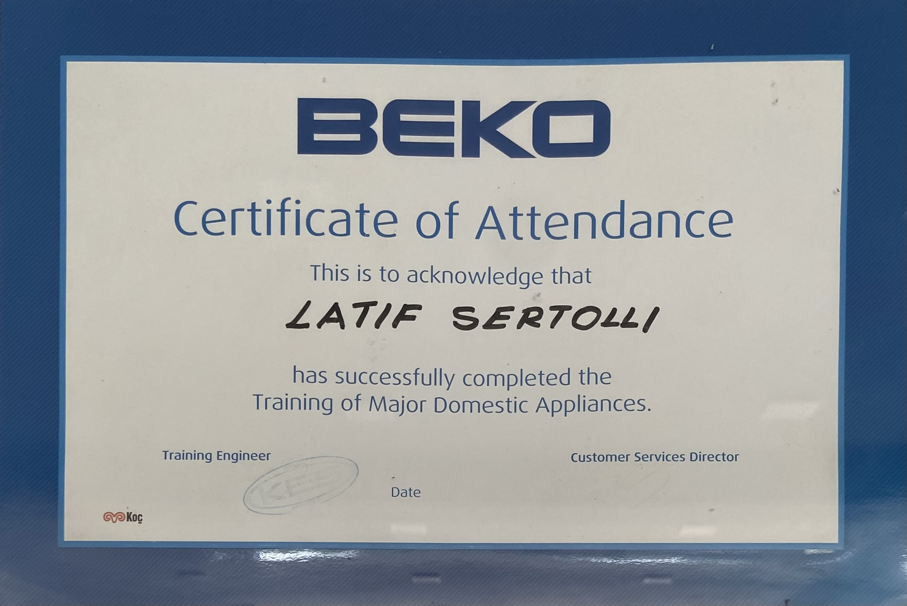
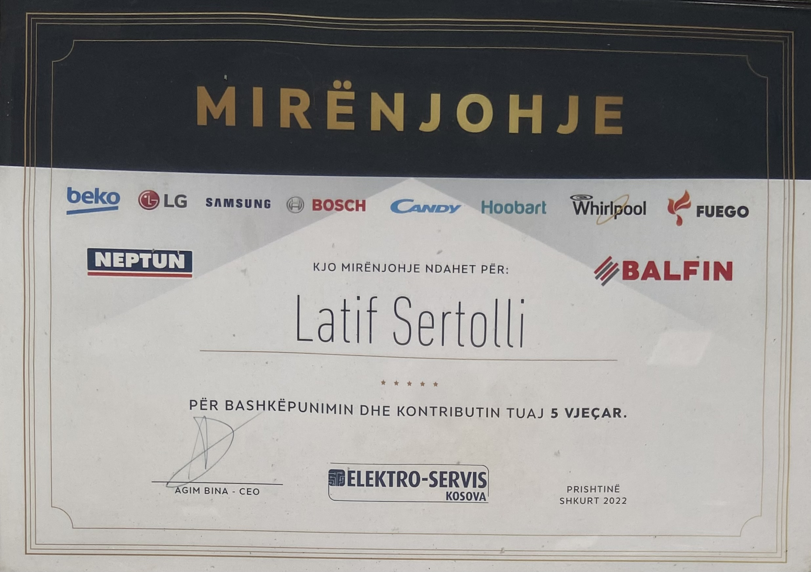
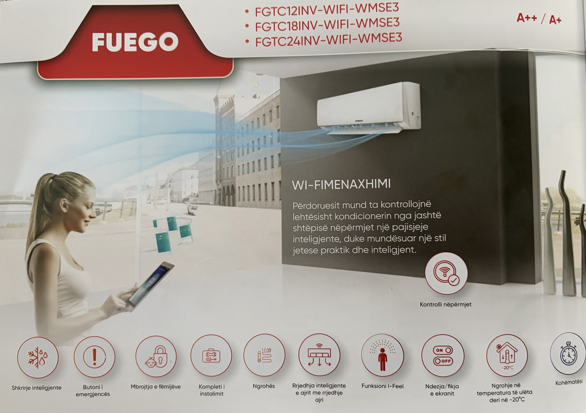
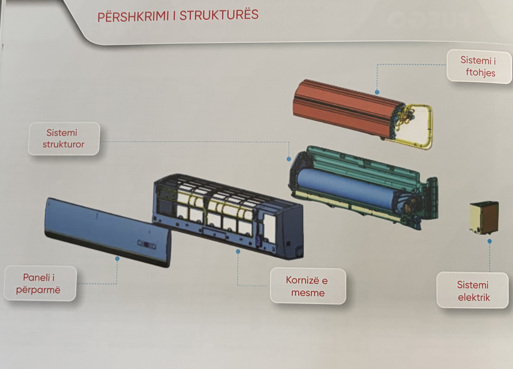
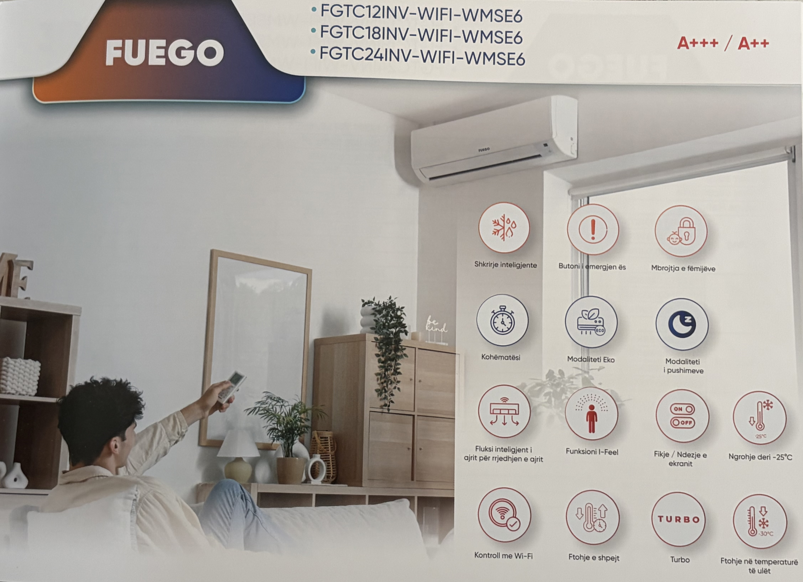
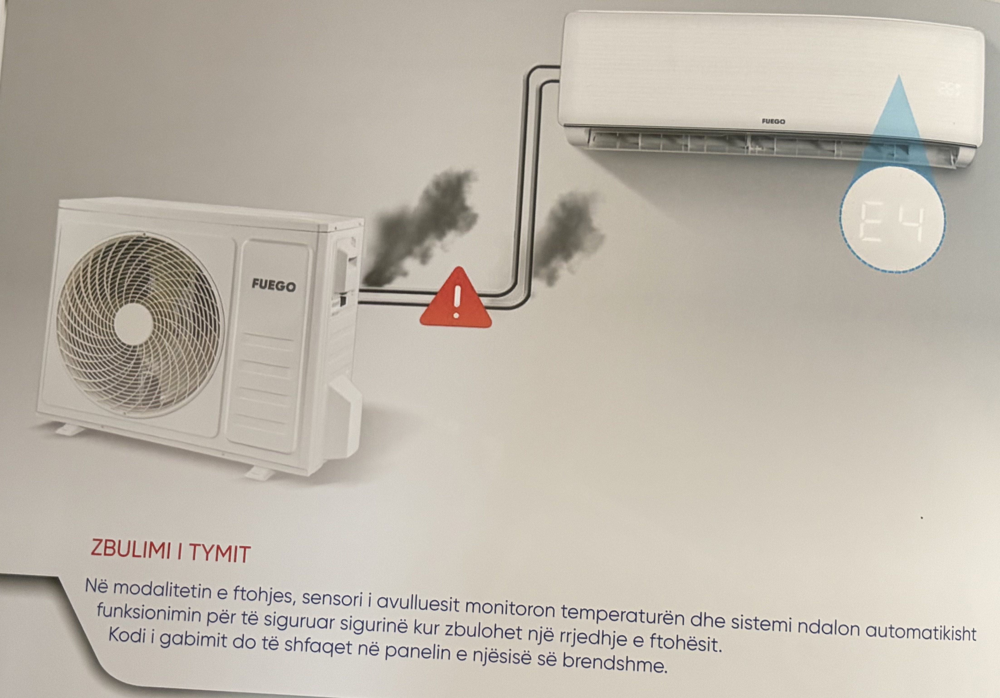
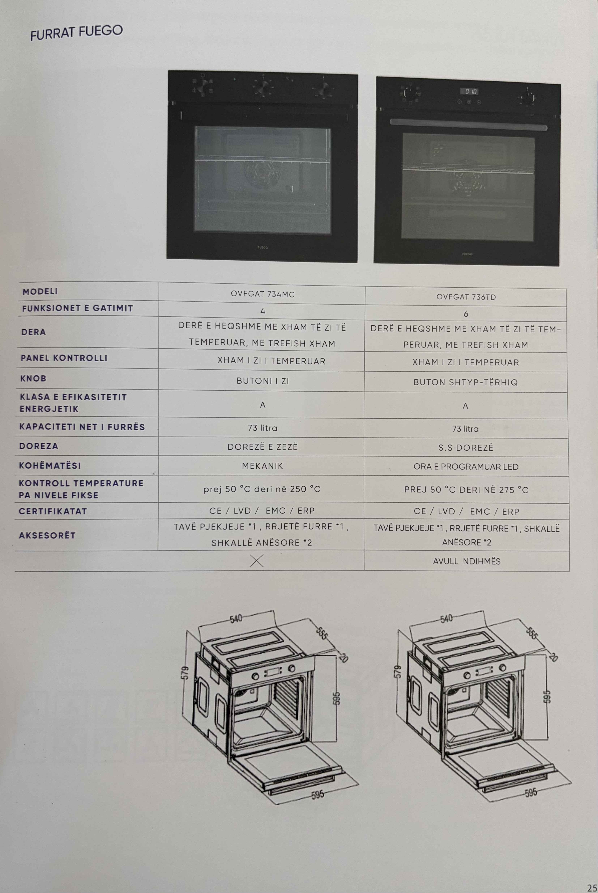
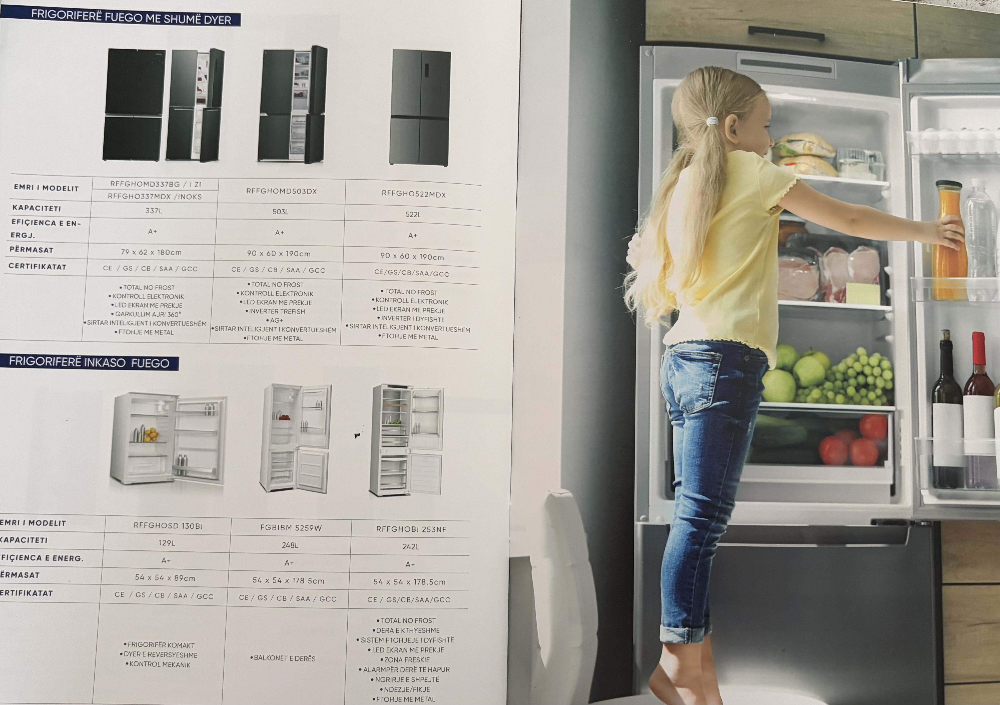
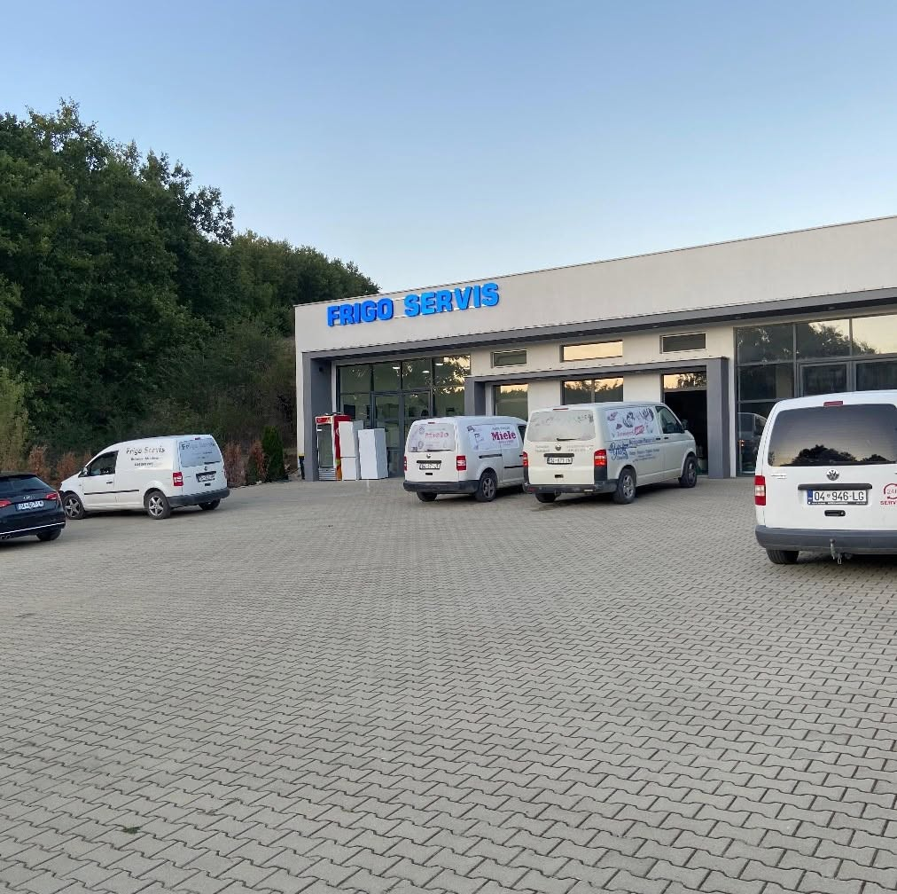
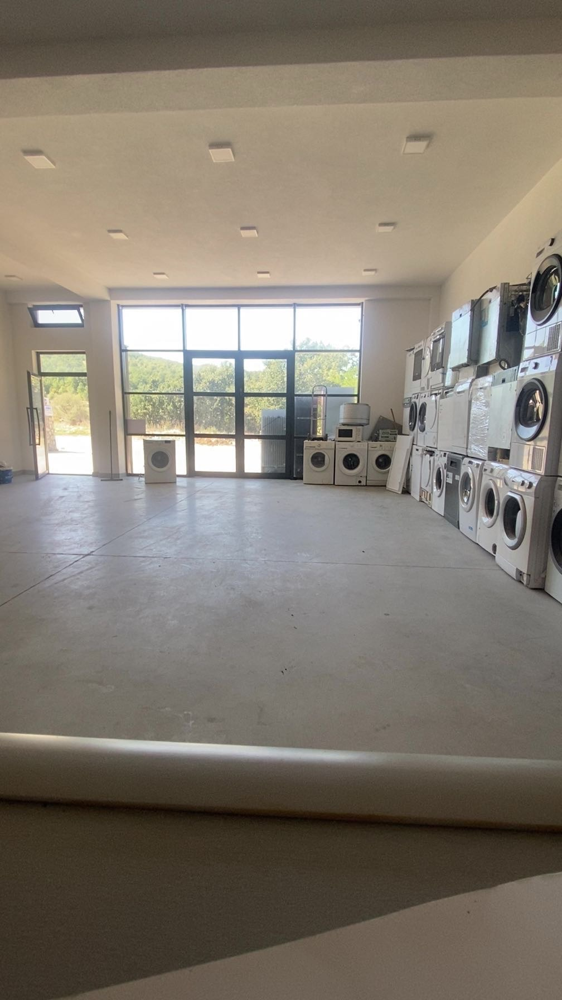

Prej më shumë se 20 vitesh, Frigo Service është përfaqësues zyrtar i markës Beko në rajon. Çdo pajisje që hyn tek ne trajtohet me të njëjtin kujdes dhe saktësi — nga diagnostikimi deri te riparimi final. Ky përkushtim ka bërë që qindra klientë të na besojnë sërish e sërish, vit pas viti.
Teknikë të certifikuar, pjesë origjinale dhe shërbim i shpejtë — kjo është formula jonë për çdo pajisje Beko që na besoni, prej mbi 20 vitesh.
* Nuk punojmë me veresi. Pjesët e këmbyera nuk kthehen.

Certifikuar zyrtarisht nga Beko si përfaqësues i autorizuar

Mirënjohje nga Elektro-Servis Kosova
Nga diagnostikimi te riparimi final, ju ofrojmë:
- Çdo ofertë bazohet në shërbimin dhe pjesët konkrete që kërkon pajisja juaj — pa kosto të fshehura. Na kontaktoni në telefon ose në rrjetet sociale për një vlerësim të shpejtë e të saktë.
- Nëse pajisja juaj Beko është ende në garancion, Frigo Service, si përfaqësues zyrtar, ofron shërbim të autorizuar sipas kushteve të prodhuesit — pa kosto shtesë për defektet teknike të mbuluara.
Për të përfituar nga garancioni, sillni me vete:
- Pas verifikimit, Beko mundëson riparimin ose zëvendësimin e pjesëve të defektuara, sipas rregullave të garancionit.

Klimë Fuego Inverter me WiFi — kontrollo temperaturën nga telefoni, ftohje dhe ngrohje deri në -20°C jashtë, klasë energjetike A++/A+

E njohim çdo pjesë të klimës — nga sistemi i ftohjes deri te ai elektrik — për diagnostikim dhe riparim të saktë

Modeli më i fuqishëm Fuego — Turbo, Eko, modalitet nate, kontroll me Wi-Fi, klasë energjetike A+++/A++

Siguri e integruar — sensori zbulon çdo rrjedhje të ftohësit dhe e ndal automatikisht sistemin, duke shfaqur kodin e gabimit në panel

Furra Fuego — 4 ose 6 funksione gatimi, kapacitet 73L, klasë energjetike A

Frigoriferë Fuego — modele me shumë dyer dhe inkaso, kapacitet nga 129L deri në 522L, klasë energjetike A+
Lokali ynë është i pajisur me hapësira të brendshme dhe të jashtme, ku kryejmë riparime profesionale për pajisjet Beko. Brenda gjeni pajisje, mjete dhe makina të specializuara për çdo lloj shërbimi teknik — nga më i thjeshti te më i komplikuari.

Pamje e jashtme e lokalit Frigo Servis

Pamje e brendshme e lokalit